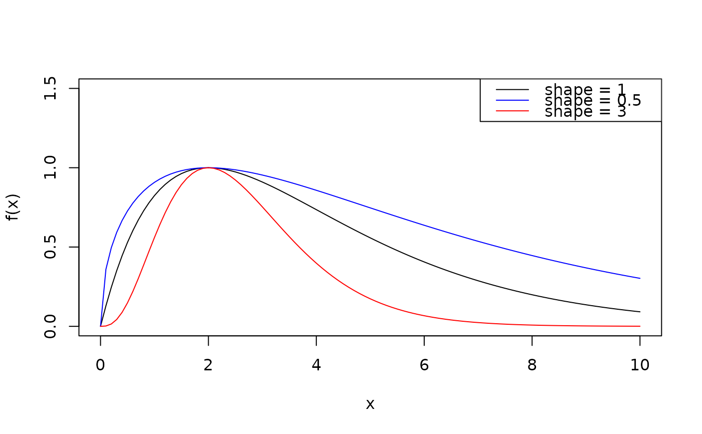

Computes the generalized Ricker function, a smooth hump-shaped curve that rises from zero, peaks, and then decays back towards zero. It is commonly used to describe humped (non-monotonic) dependencies, such as stock-recruitment relationships in ecology or size-dependent predation.
Arguments
- x
Value at which to evaluate the function. Because the curve involves a fractional power of
x,xis expected to be non-negative.- location
Value of
xat which the function reaches its peak. Defaults to 1.- upper
Maximal value (height) of the function, attained at the peak. Defaults to 1.
- shape
Exponent controlling the width of the peak: values above 1 narrow the peak, values below 1 broaden it.
shape = 1gives the standard Ricker function. Defaults to 1.- a, b
Coefficients of the equivalent expanded form \(f(x) = a \cdot x^{shape} \cdot e^{-b \cdot x}\). Optional alternative to
locationandupper: when bothaandbare supplied, they take precedence and setlocation = shape / bandupper = a \cdot (location / e)^{shape}. Withshape = 1this is the standard Ricker parameterization \(f(x) = a \cdot x \cdot e^{-b \cdot x}\). Supplying only one of them, or combining them with an explicitlocationorupper, is an error. Default toNULL.
Value
Numeric value given by $$f(x) = upper \cdot \left(\frac{x}{location} \cdot e^{1 - x / location}\right)^{shape}$$
Details
The generalized Ricker function (Persson et al., 1998) is defined as:
$$f(x) = upper \cdot \left(\frac{x}{location} \cdot e^{1 - x / location}\right)^{shape}$$
with a power parameter (\(\alpha\), or shape) that broadens or narrows the
peak. The function peaks at x = location, where it attains the value upper,
for any shape.
Expanding the expression shows that it is equivalent to:
$$f(x) = a \cdot x^{shape} \cdot e^{-b \cdot x}$$
with coefficients
$$a = upper \cdot (e / location)^{shape}$$ $$b = shape / location$$
or equivalently
$$location = shape / b$$ $$upper = a \cdot (location / e)^{shape}.$$
Note that \(e\) is the base of the natural logarithm (i.e., exp(1)). When
shape = 1, the power on x is 1 and this reduces to the standard Ricker
function \(f(x) = a \cdot x \cdot e^{-b \cdot x}\), with \(a = upper \cdot e / location\)
and \(b = 1 / location\).
See Bolker, B. M. (2008). Ecological Models and Data in R. Princeton University Press, Section 8.1.
Examples
ricker(1)
#> [1] 1
# Adjust parameters
ricker(2, location = 2, upper = 10, shape = 1)
#> [1] 10
# Use the expanded form f(x) = a * x^shape * exp(-b * x) instead.
# With shape = 1 this is the standard Ricker f(x) = a * x * exp(-b * x).
ricker(3, a = 2.5, b = 0.4)
#> [1] 2.258957
# equivalent to:
ricker(3, location = 1 / 0.4, upper = 2.5 * (1 / 0.4 / exp(1)))
#> [1] 2.258957
# The mapping holds for any shape, e.g. f(x) = a * x^2 * exp(-b * x)
ricker(3, a = 2.5, b = 0.4, shape = 2)
#> [1] 6.77687
# Visualize different peak widths
curve(ricker(x, location = 2), from = 0, to = 10, ylab = "f(x)", ylim = c(0, 1.5))
curve(ricker(x, location = 2, shape = 0.5), add = TRUE, col = "blue")
curve(ricker(x, location = 2, shape = 3), add = TRUE, col = "red")
legend("topright",
legend = c("shape = 1", "shape = 0.5", "shape = 3"),
col = c("black", "blue", "red"), lty = 1
)
